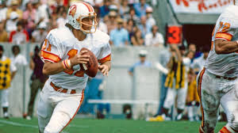

Worst NFL teams of all time

1. 2008 Detroit Lions (0–16) First team in NFL history to go 0–16 Lost games by an average of 15+ points Defense allowed 517 points
2. 2017 Cleveland Browns (0–16)
Second 0–16 team
15 of 16 losses by double digits
Part of a 1–31 two-season stretch (2016–2017)


3. 1976 Tampa Bay Buccaneers (0–14)
Expansion team
Lost first 26 games in franchise history (spanning two seasons)
Scored only 125 total points all season